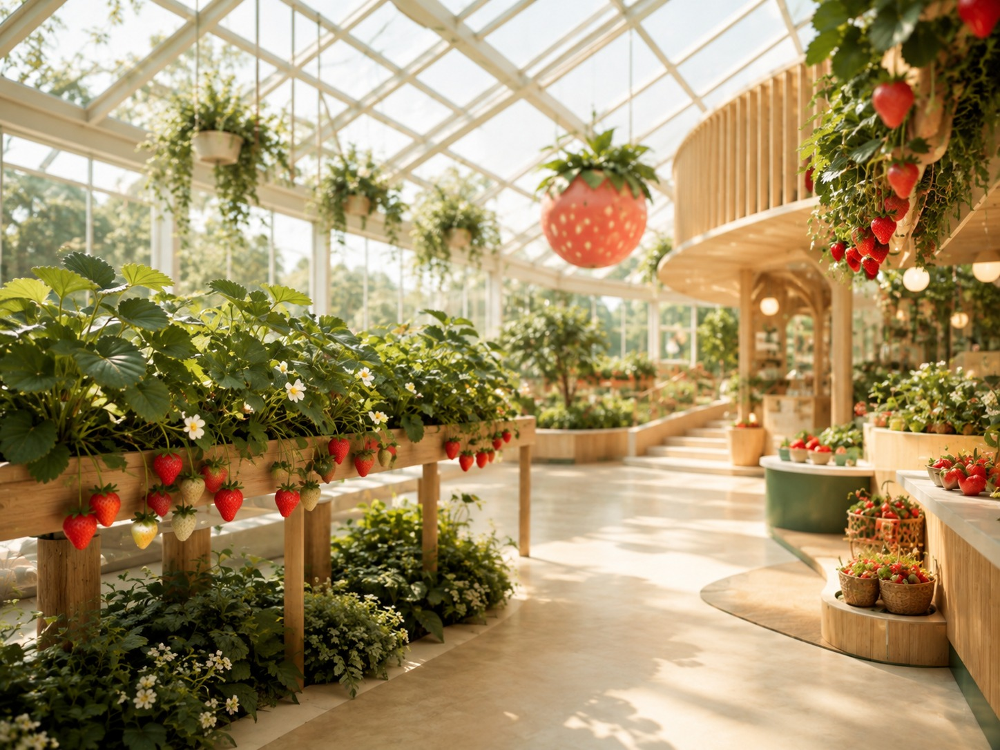

遠くの山まで行く元気はない。でも、ビルだけを見て一日を終えたくない。そんな日は、庭園や植物園がちょうどいい。歩く距離も滞在時間も、自分の気分に合わせて調整しやすい。
その日の気分から、選び方をひとつ。
静かに歩きたい庭園を一周して、予定を増やさない。
天気が読めない温室や屋内展示のある植物施設へ。
文化もほしい建築や歴史のある庭園なら、緑だけで終わらない。
街の中に、緑の余白をつくる
仕事や買い物の延長でも行ける場所から。
横浜イングリッシュガーデン
季節の花に囲まれた庭園をゆっくり散歩。子ども中心のお出かけから少し離れて、景色を楽しみたい日に。
この場所を見る →
東京都庭園美術館
アール・デコ建築と庭園を一緒に楽しめる美術館。展示を見たあと庭を歩いたり、カフェで余韻を楽しんだりできる。
この場所を見る →清澄庭園
池と名石、緑の中を静かに回れる日本庭園。清澄白河のカフェ巡りと合わせて、予定を詰めない一日に。
この場所を見る →
渋谷区ふれあい植物センター
渋谷にあるコンパクトな植物センター。植物を眺めるだけでなく、カフェやイベントを通じて「農と食」にもふれられる。
この場所を見る →新宿御苑
広い芝生や庭園を歩き、季節の植物を眺める新宿の緑の時間。子どもの遊び場と組み合わせる前に、大人も気分を整えられる主役に。
この場所を見る →植物と歴史を、もう少し深く
温室や古建築のある場所で、歩く速度を落とす。
板橋区立 熱帯環境植物館
熱帯の森を再現した温室で、大きな植物や水辺の生きものに出会える。都内でちょっと南国旅行気分。
この場所を見る →三溪園
歴史ある建物と日本庭園をゆっくり歩ける横浜の名園。季節の花を眺めながら、少し落ち着いた親子時間を。
この場所を見る →KIBUN NOTE
全部回らなくていい。
この特集はランキングではなく、今日の気分に合う入口を見つけるためのもの。気になる場所をひとつだけ選んで、前後の予定は詰めすぎないくらいがおすすめです。
庭園・植物園は季節やイベントによって見どころ、開園時間、入場方法が変わることがあります。最新情報をご確認ください。
MOOD → PLACE
まだ決めきれないなら、気分から。
「のんびり」「非日常」「学びたい」など、その日の気分からKibunのスポットを探せます。
今日の気分から探す →